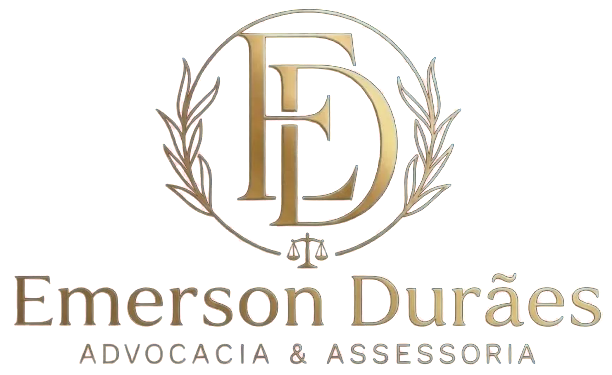

Todo problema jurídico começa como uma ruína.
Prazos perdidos, contratos desfeitos, direitos que ninguém soube defender a tempo. É daí que o nosso trabalho parte.
Prazos perdidos, contratos desfeitos, direitos que ninguém soube defender a tempo. É daí que o nosso trabalho parte.
Cada documento, prazo e argumento volta ao lugar certo, com método e com você informado a cada etapa.

Atendimento direto com o advogado responsável, do primeiro diagnóstico à decisão final.
Role para reconstruir
Seis frentes em que atuamos todos os dias, na via judicial e fora dela.
Elaboração e revisão de contratos, cobranças, responsabilidade civil e ações de indenização.
Divórcio, guarda, alimentos, inventário, arrolamento e planejamento sucessório.
Fraudes, cobranças indevidas, negativas de seguro e revisão de contratos financeiros.
Reclamações, defesas, acordos e acompanhamento de autuações administrativas.
Contratos de locação, despejo, renovatória, usucapião e adjudicação compulsória.
Concessão e revisão de benefícios, recursos administrativos e ações contra o INSS.
Quatro etapas, sempre nessa ordem. Você sabe em qual delas está.
Ouvimos a história inteira, reunimos documentos e dizemos com franqueza quais são as chances.
Definimos o caminho mais curto: negociar, notificar ou ajuizar, com prazos e custos explicados.
Petições, audiências e diligências conduzidas pelo advogado responsável, sem terceirizar o seu caso.
Resumo claro a cada movimentação relevante e orientação sobre o que fazer depois da decisão.
Envie uma mensagem com um resumo do caso e os documentos que você já tem. Respondemos em até um dia útil.